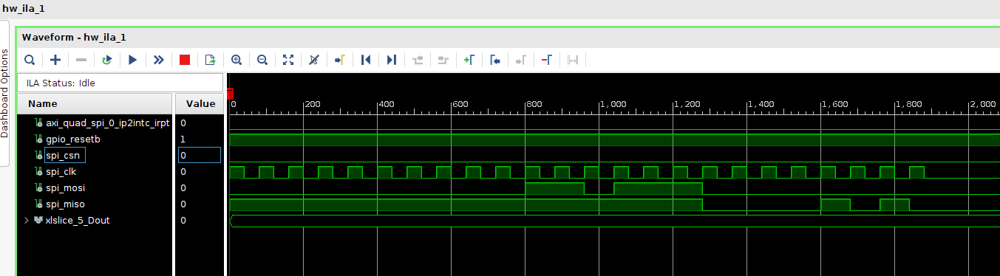
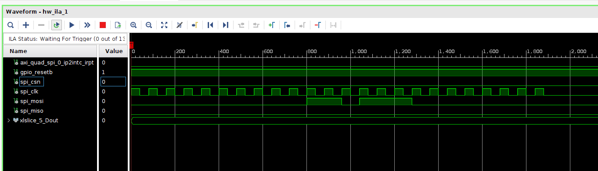
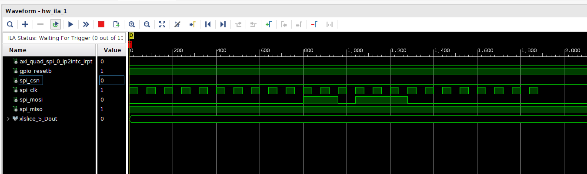

2023 年 3-6 月工作总结
给从今年三月到现在断断续续的工作做一个总结
1 RTL-SDR & PYNQ-Z2
1.1 现有工作
这个工作是将 RTL-SDR 通过 USB2.0 与 PYNQ-Z2 连接来配合使用。RTL-SDR 将射频信号下变频为基带信号；PYNQ-Z2 通过 USB2.0 接口接收 RTL-SDR 返回的基带信号，并使用 FPGA 进行信号处理。最后，可以在 PYNQ Jupyter Notebook 中实现一个简单的 FM 收音机的网页应用。

PYNQ-Z2 + RTL-SDR
详情见
1.2 可能的改进
- 在 Jupyter Notebook 中用滑块小组件进行调谐，会有些卡顿。如果将更多的 CPU 操作 offload 到 FPGA，就可以减轻 CPU 压力，从而减少卡顿。
2 AD9361 + PYNQ 内核
2.1 现有工作
这个工作基本上来说就是通过 Petalinux 将 PYNQ 和 AD9361 的驱动构建到同一个内核中。国内 MicroPhase 做过这个工作，但并未使用 FPGA 进行数据处理。
在 ZedBoard 上，2019_R1 + PYNQ v2.4 版本可以成功。启星和我在这个链接中总结了构建的步骤以及各种可能的问题和解决办法。
在 PYNQ-ZU 上，由于 PYNQ-ZU 的 BSP 只有 PYNQ v2.7 及以后的版本，而 PYNQ v2.7 需要配合 2020 年版本的工具链，并且在该版本遇到了一些问题（见 2.2.1 节），因此没有成功。
2.2 遇到的问题
2.2.1 ADI 的 Yocto Layer 与 PYNQ 不兼容
2019 年之后的版本的 meta-adi 的 recipes-bsp 会覆盖掉 PYNQ 的 recipes-bsp 所引入的修改。
如下是文件 meta-adi-xilinx/recipes-bsp/device-tree/device-tree.bbappend 的一部分：
|
|
它直接将 system-top.dts 覆盖掉。而更合适的实践应该是向 system-top.dts 中增加代码（PYNQ 就是这么做的）。
由于这个原因，没有构建出 ADI master branch + PYNQ v3.0.1 的内核。也许可以对 recipes-bsp 做一些修改从而使其与 PYNQ 兼容，但是这个工作搁置了。并且我们有理由搁置这个工作，见下一节（第 2.2.2 节）。
另外，Yocto 官方建议，当使用多个 Yocto Layer 的时候，应该要去 OpenEmbedded Layer Index 和 Yocto Project Compatible Index 查看不同的 Layer 之间是否兼容。不幸的是，这两个 Index 并未收录 meta-pynq 和 meta-adi。
2.2.2 FPGA MANAGER 的问题
meta-adi-xilinx 的文档明确提到了他们没有对 FPGA MANAGER 的官方支持。而如果禁用 FPGA MANAGER，那么就无法在板卡启动之后重载比特流。这让 PYNQ 失去了意义。
我猜 ADI 的想法是将 FPGA 作为一个功能固定的外设，即，设备树和比特流都在系统启动的时候加载好，并且不希望被修改。这与 PYNQ 的想法从根本上是矛盾的。
因此，不建议将 AD9361 和 PYNQ 的驱动集成在一个内核中，而是允许系统启动后动态地加载 AD9361 的设备树和比特流，见下一节（第 3 节）。
3 User-Space AD9361 驱动
3.1 已有的工作
为了绕开上一节提到的困难，可以在用户空间中使用 AD9361 驱动，而不是将驱动集成到内核中。但是，为了与 AD9361 的 SPI 接口通信，需要在 Linux 设备树中添加一个 spidev 节点，从而允许通过读写 /dev/spidevx.y 文件来读写 SPI
在
/dev/spidevx.y中，x代表第x个 SPI 控制器，y代表第y个片选。如果使用 PS SPI，那么设备名可能为/dev/spidev0.0；如果使用 PL SPI（AXI SPI），则设备名可能为/dev/spidev1.0。
设备树通常在启动时被 U-Boot 加载好，并且不可修改。但是 4.14 版本之后的 Linux 内核增加了对 device tree overlay（以下简称 DTO）的支持。DTO 允许在运行时动态加载新的设备树。PYNQ 库也提供了 API 来实现这个操作：
|
|
这个 API 不仅允许下载比特流（bitfile_name），而且允许动态增量加载新的设备树（dtbo）。如下是通过 AXI SPI 加入 spidev 的设备树代码：
|
|
有几个值得注意的点：
- 需要在
/dts-v1/;后面增加一行/plugin/;来表示这是一个 Device Tree Overlay 而不是普通的 Device Tree。ADI 的 recipes-bsp 就是通过观察文件中是否包含/plugin/;来判断设备树是否是 Overlay。target表示修改哪一个节点。这里是<&amba>，它会被扩展为符号为amba的节点的 phandle。例如，如果amba节点的 phandle 为70，那么<&amba>实际上代表<70>。一个 phandle 唯一标识了一个节点，往往是由编译器（dtc）分配的。- 往往需要增加编译选项
-@。该选项启用符号功能，从而允许通过符号对设备树节点进行引用。否则，只能通过 phandle 的绝对值来引用。
上述文件编译出的 DTO 配合 AXI SPI 是可以正常使用的。这就是启星他们之前的工作。但是，在将子卡从 V3 的 FMC9361_1.0 换成 FMCOMMS2/FMCOMMS3 之后，SPI 通信出现了一些问题，见下一节（第 3.2 节）。
3.2 遇到的问题
3.2.1 SPI 通信问题
AD9361 的 SPI 指令为两个字节，格式为：
D15 D14 D13 D12 D11 D10 D9:D0 W/R NB2 NB1 NB0 X X A[9:0] 其中
- W/R 代表写还是读（1为写，0为读）；
- NB2:NB0 代表读写的字节数；
- A[9:0] 代表寄存器地址。 在发送（写）数据的情况下，要发送的数据要跟在上述两字节的指令之后；在接收（读）数据的情况下，发送指令之后即可开始读取数据。
AD9361 的地址为
0x037的寄存器中存储了PRODUCT_ID。对于 AD9361 Rev 2，PRODUCT_ID应当为0x0A。初始化 AD9361 时，驱动先通过
GPIO_RESETB进行硬件复位（至少 1us），再读取0x037寄存器，判断PRODUCT_ID。
在将 V3 的 FMC9361_1.0（以下简称 V3）换成 FMCOMMS2（以下简称 S2）和 FMCOMMS3（以下简称 S3），并修改了管脚约束之后，SPI 通信出现了问题。
S2/S3 几乎可以看成同一张卡。它们的引脚定义是相同的。
具体来说，在 Master（AXI SPI 控制器）向 MOSI 上发送 0x037（读地址为 0x037 的寄存器）之后，Slave（AD9361）并未在 MISO 上发送 0x0A（PRODUCT_ID）。实际情况如下：
| 子卡 | 现象 | 波形 |
|---|---|---|
| V3 | MISO上正确返回0x0A |
 |
| S2 | MISO一直为低，因此读到的是0x00 |
 |
| S3 | MISO一直为高，因此读到的是0xFF |
 |
尝试过 Linux 的 SPI 驱动以及裸机程序，现象相同。
考虑的因素如下：
| 因素 | 考虑 |
|---|---|
| 管脚约束 | 再三通过原理图确认过四线 SPI 的 MOSI、MISO、CS 和 CLK 的管脚约束 |
| 复位 | 通过 ILA 确认了 GPIO_RESETB 被拉低了 1ms |
| SPI 模式 | 确认了 SPI 模式为 0x01（CPOL=0，CPHA=1） |
| SPI 时钟 | 已经在 Block Design 中将 AXI SPI 的时钟频率设置得很低（10ns 系统时钟的 80 倍分频）。应该可以排除时钟质量问题。 |
| 电平标准 | 在 ZU 的原理图中确认了 VADJ 为 1.8V；VCCO 也为 1.8 V；符合要求。 |
| 驱动问题 | 可以确定不是软件问题，因为 S2/S3 和 V3 用的是同一个驱动程序。 |
PYNQ-ZU + FMCOMMS2/3
|
|
PYNQ-ZU + V3 (FMC9361_V1.0)
|
|
ZCU104 + FMCOMMS2/3
|
|
-
在 ZU + S2/S3 平台上遇到了 SPI 读不到 PRODUCT_ID 的问题。
-
但是 104/102 + S2/S3 平台可以读到 PRODUCT_ID，这说明问题很可能与 ZU 本身的 FMC 引脚相关。
-
之所以在 V3 子卡上没有出现这个问题，是因为 V3 和 S2/S3 的 SPI 对应的 FMC 引脚不同。
-
进一步测试可能需要示波器。
-
可以暂时放弃 ZU 板卡，而是转向 104 + S2 平台，实现后续的 PYNQ + SDR 应用。
3.2.2 *Device Tree Overlay 问题
在 ZCU102/ZCU104 上加载 Device Tree Overlay (*.dtbo) 没有报错，但并未出现 /dev/spidev1.0 设备。
ZCU102/104 的 Vivado 工程除了管脚约束和芯片型号以外都相同，因此通过 xsa 文件生成的
pl.dtsi与 ZU 的没有区别。
初步判断原因可能和 dtc 编译器有关（之前似乎遇到过类似的问题，并且是 dtc 版本导致的）。
|
|
|
|
将上述 system.dtso 文件通过dtc -O dtb -o system.dtbo -b 0 -@ system.dtso 编译得到的 system.dtbo 在 PYNQ-ZU 上可以正常工作，但是在 ZCU104 上，会找不到 /dev/spidev1.0 设备。
另外，无论是在 PYNQ-ZU 还是在 ZCU104 上，dmesg 都会收到警告如下：
|
|
该警告似乎是可以忽略的。
如果希望基于 104 + S2 平台，实现后续的 PYNQ SDR 应用，则需要解决这个问题。
4 总结
| 项目 | 结果 | 问题 |
|---|---|---|
| PYNQ-Z2 结合 RTL-SDR 使用 | 实现了一个基于 Jupyter Notebook 的 FM 收音机网页小程序 | 性能还有提升空间 |
| 将 AD9361 的驱动集成到 PYNQ 内核 | PYNQ v2.4 + meta-adi 2019_R1 成功 | 在 2019 年以后的版本中，meta-adi 不支持 FPGA_MANAGER |
| 在用户空间驱动 AD9361 | 在 V3 子卡上成功实现。硬件部分集成了 FFT 和 FIR 的数据处理 IP 核 | 在 ZU + S2/S3 平台上遇到了 SPI 读不到 PRODUCT_ID 的问题。但是 104/102 + S2/S3 平台可以读到 PRODUCT_ID，这说明问题很可能与 ZU 本身 FMC 引脚相关。之所以在 V3 子卡上没有出现这个问题，是因为 V3 和 S2/S3 的 SPI 对应的 FMC 引脚不同。进一步测试可能需要示波器。可以暂时放弃 ZU 板卡，而是转向 104 + S2 平台，实现后续的 PYNQ + SDR 应用。 |